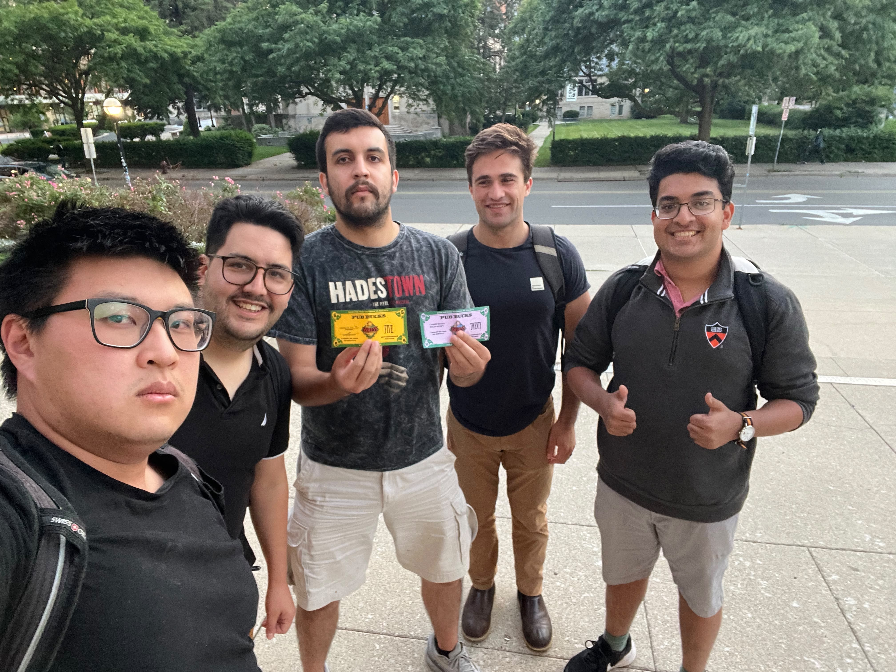
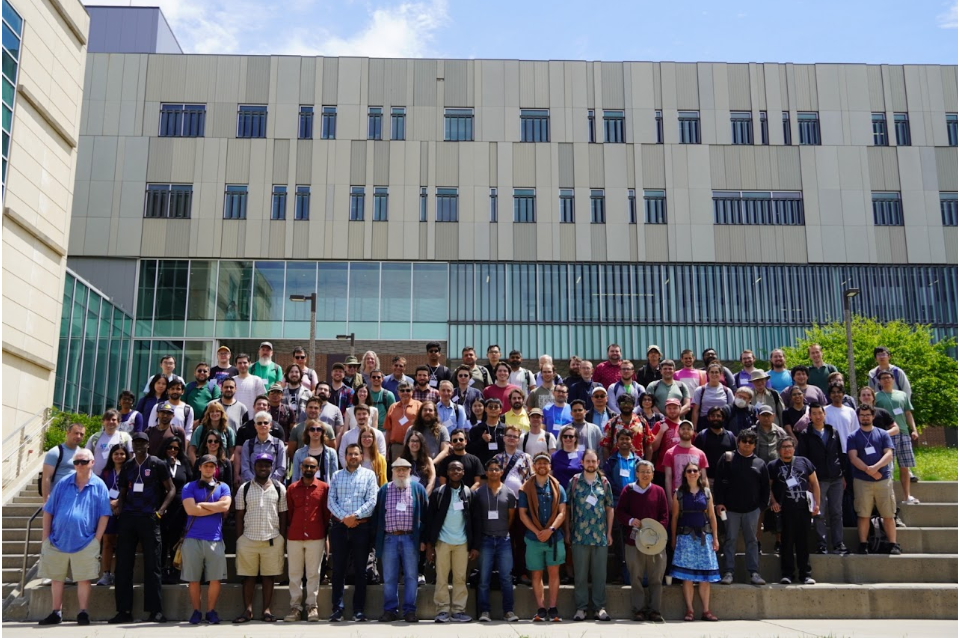
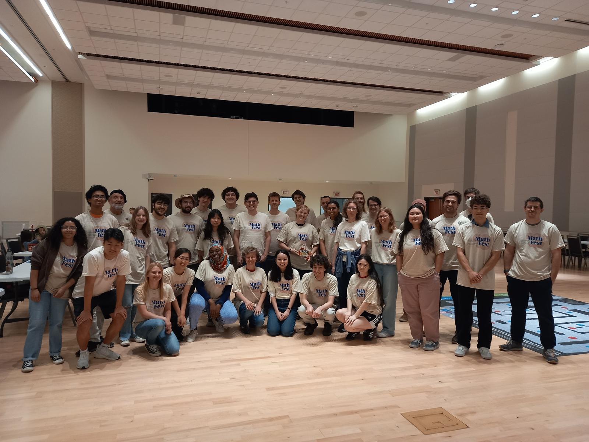
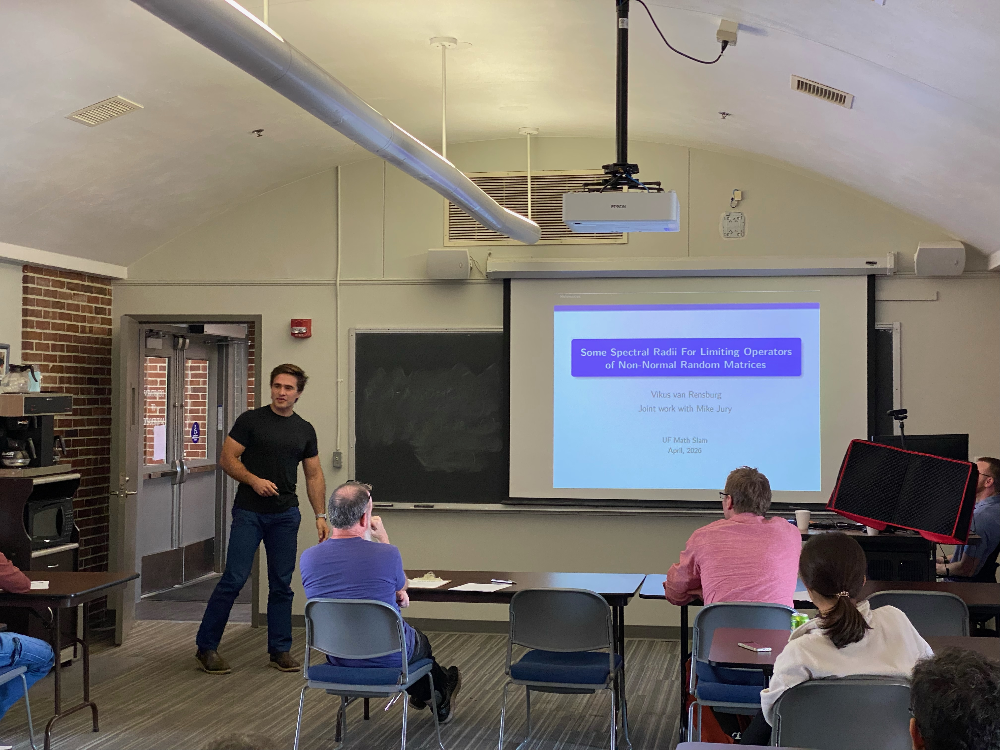
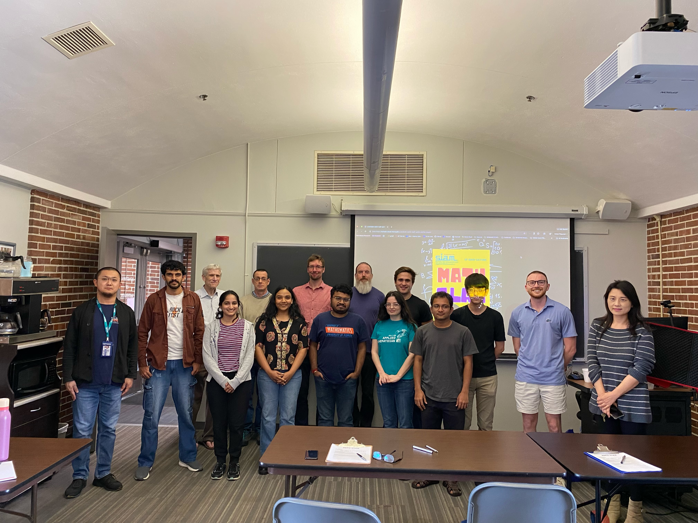
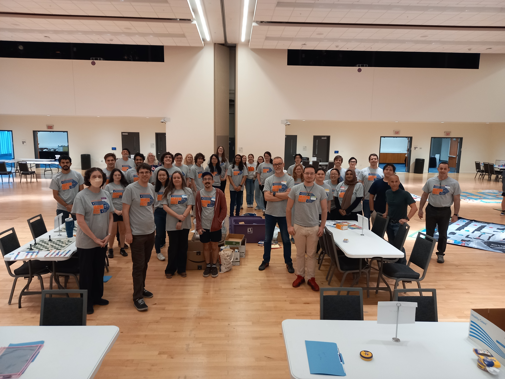
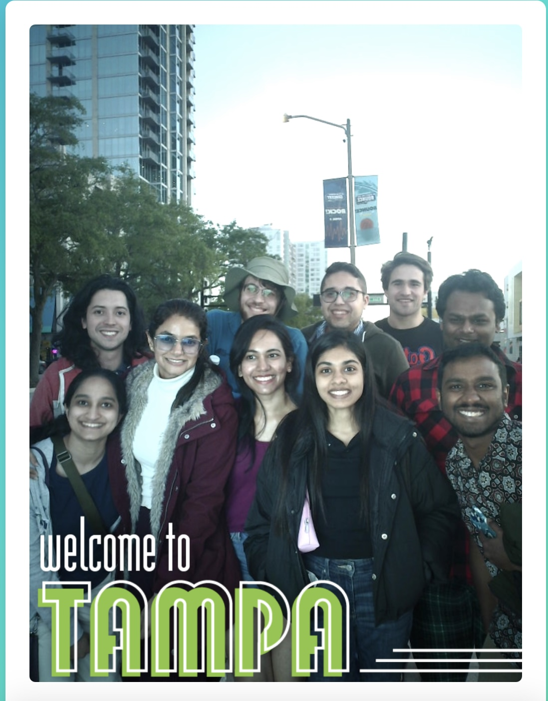

Some pictures
 2026: RMT Summer School Michigan: Group kayaking trip down the Huron River, Michigan.
2026: RMT Summer School Michigan: Group kayaking trip down the Huron River, Michigan.

2026: RMT Summer School Michigan: Showing off our prize money from quiz night.

2026: A group photo at GPOTS 2026 in Iowa City.

2026: All the helpers at Unversity of Florida's Mathfest.

2026: Presenting my research in 10 minutes at Mathslam.

2026: Third place at University of Florida's Mathslam. Here are all the contestants and judges.

2025: All the helpers at Unversity of Florida's Mathfest.

2025: Some graduate students at SEAM 41 in Tampa, FL.
×